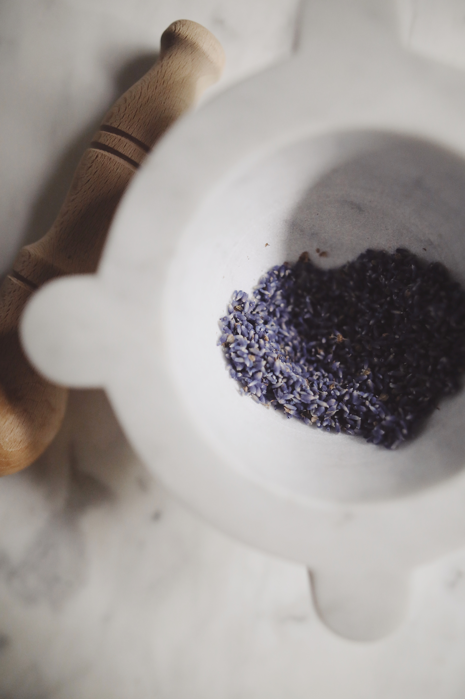
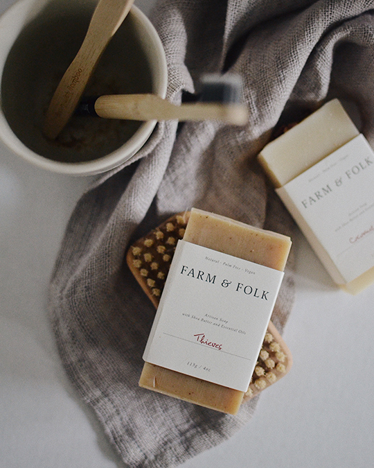
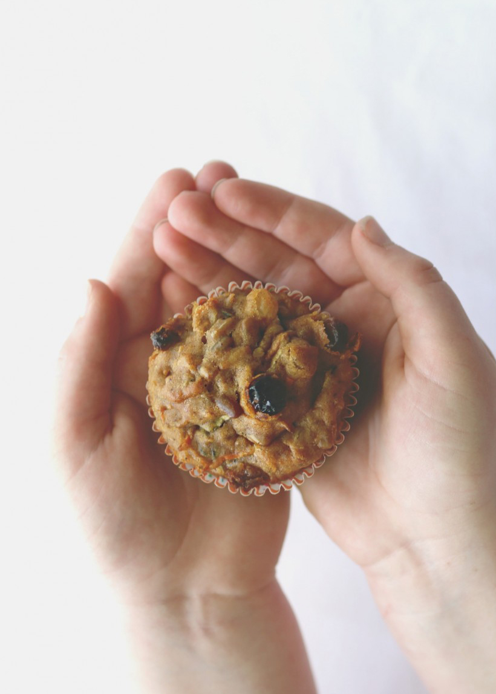

We Support Nourish Cowichan With Soap Donations
HOME
ABOUT
SHOP
SOAP QUIZ
Farm-To-Body Handmade Artisan Soaps
Beautifully clean + effective body care products with the finest plant-powered ingredients
SHOP NOW
Collection
Artisan Soap
Pottery Candles

Shop All
Discover Nourishing, Natural Soap

Our Story
We Believe In The Power Of Nature To Help You Unwind
LEARN MORE
